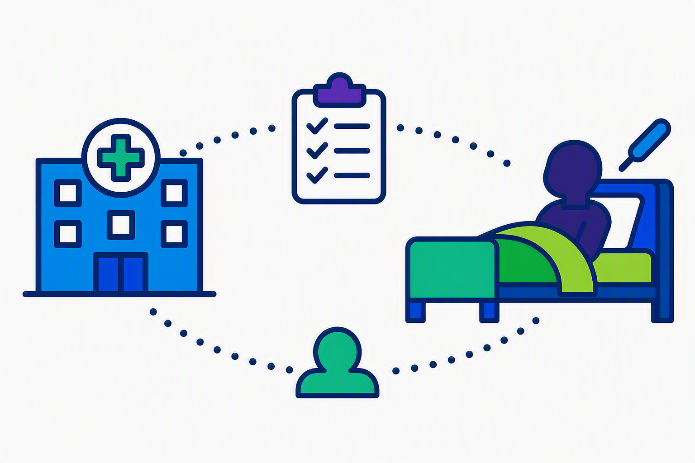
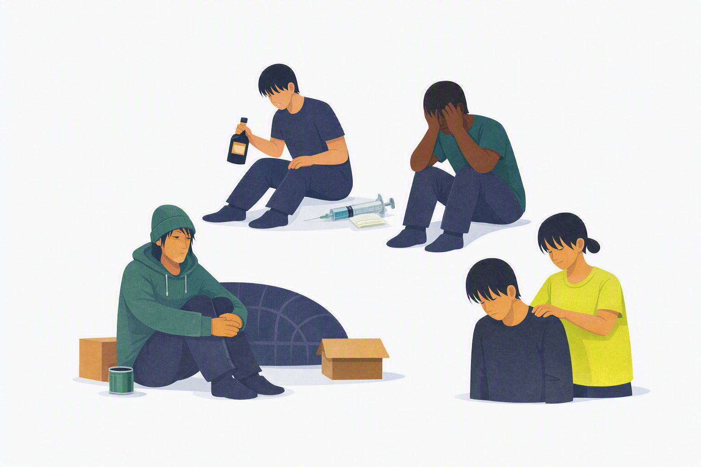
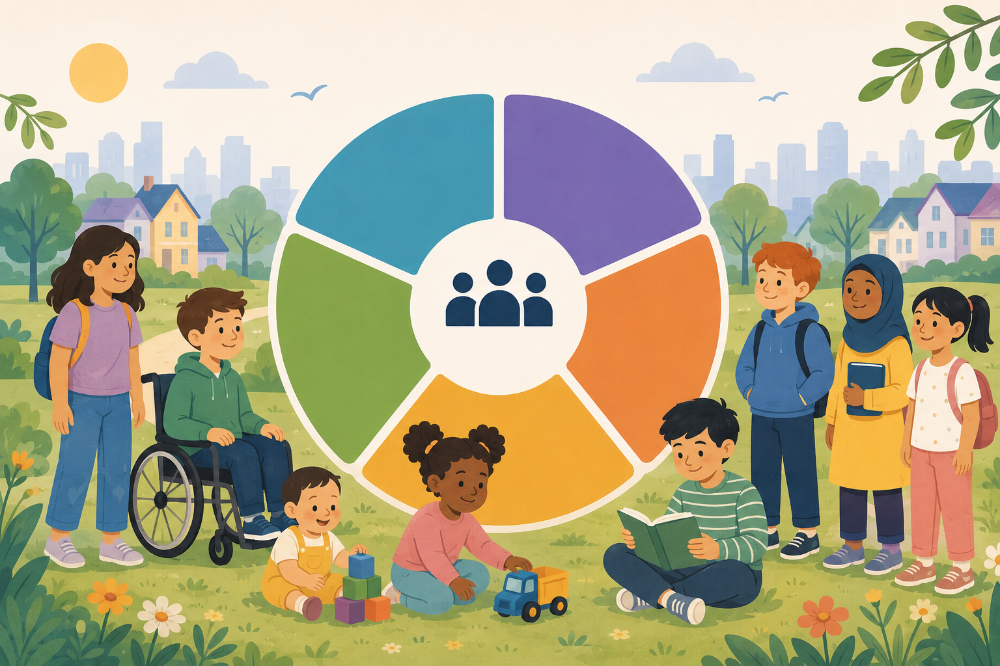

This portfolio showcases projects delivered by the Population Health Management Analytics team. We are a highly skilled analytics team specialising in population health data, linking large datasets to generate actionable insights and supporting strategic decision-making.
Type: Clustering / segmentation model
Analyst: Anne Summerell
Machine learning clustering technique, to identify 26 proposed neighbourhoods, each serving around 50,000 people to inform consultation and local planning.

Type: Clustering / segmentation model
Analyst: Sarah Hollier
Combines multiple datasets to identify where cold homes and fuel poverty risks are most concentrated. Provides insights to target interventions and improve population health outcomes.

Type: Multivariate logistic regression model
Analyst: Sarah Hollier
Uses multivariate binary logistic regression to assess if being on a general practice palliative care register reduces the probability of hospital death.

Type: Descriptive statistics
Analyst: Anne Summerell
Uses linked data to focus on people with at least three of: homelessness / insecure housing, substance / alcohol dependence, mental health conditions, contact with adult social care

Type: Segmentation model
Analyst: PHM analyst team
Uses linked health and social care data, including linking children to the adults they live with, to segment the under 18 population in BNSSG
Type: placeholder
Analyst: Sarah Hollier
This project uses linked health and household data for children in BNSSG to examine risk factors for acute respiratory illness, including hospital admissions and A&E attendances.
Type: Time Series Analysis
Analyst: Fiona Thrupp
Machine learning model, combining multiple data sources to the number of appointments which are likely to be missed.
Email: bnssg.phm@nhs.net